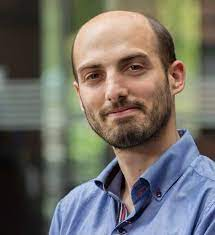

 I started my research career as an undergrad in freshwater ecology, studying how macrobenthic communities respond to a variety of impacts across small and large scales. With time, this experience evolved to a passion for large-scale ecosystem-based approaches where multiple environmental and human-driven variables are interlinked with natural systems. Following this, I have worked at the Polytechnic Institute of Viana do Castelo as a Lecturer and Researcher (2006-2013). During this period I have taught courses in spatial analysis, remote sensing and ecosystem modelling, having collaborated and led several projects in environmental risk analysis (floods, soil erosion, landslides), landscape planning and ecology, and ecosystem assessments. Between 2009-2010 I worked at the Protected Area of Bertiandos e São Pedro D’Arcos and it allowed me to see first hand the delicate balance needed to accommodate social development and nature conservation. The work that I did during this time increased my understanding of the need for evidence-based policy support that goes beyond a single discipline and integrates knowledge and data to deliver and anticipate adequate solutions for current and future environmental problems I did my PhD in Integrated Management of Landscape at Évora University (2012-2015) where I explored large-scale terrestrial ecosystem modelling in the cross between conservation ecology and social sciences. During this period I did an internship at the Joint Research Center (Italy) where I developed terrestrial ecosystem models for policy support and I have also engaged in several assessments of terrestrial ecosystems at the European scale. Since March 2016, I have been a researcher at the German Centre for Integrative Biodiversity Research (iDiv), and Martin Luther University Halle-Wittenberg, having served as a Scientist in the GEO Biodiversity Observation Network (geobon.org) until 2018. My current position has allowed me to bridge between multiple scales and disciplines, and participate in several international initiatives, including IPBES (ipbes.net) both as member of the models and scenarios and data and knowledge task forces and as co-author of the first regional and global assessments, LUCAS (tinyurl.com/y7hczasv) where I am currently leading a soil function initiative, the UN Food and Agriculture Organization assessment of global soil biodiversity as a co-author, and as the co-lead of the first global soil biodiversity monitoring network (tiny.cc/soilbon). Actively participating in these distributed networks of scientists allowed me to contribute to several high-profile papers and reports and to create the basis for the exciting research that I want to do in the near future. Overall, I’ve contributed to several national and international collaborative initiatives/projects from which I have more than 50 publications (31 in the last 5 years) in international journals and book chapters (H-index=16; i10-index=21; >1300 citations-GS) ## Recent Developments Checkout TensorVoices a five episode podcast of conversations about tensors with enthusiastic guests. Hosted by Thomas Kahle and me. Check out a video abstract about context-specific causal models .